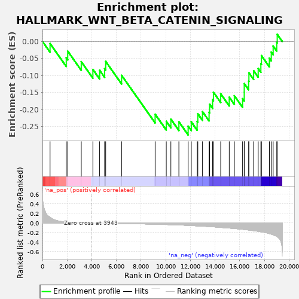
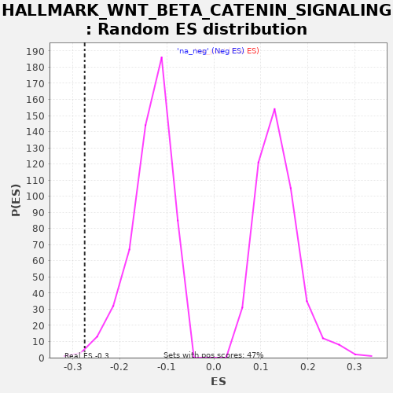

| | | Dataset | X_enriched_genes copy |
| Phenotype | NoPhenotypeAvailable |
| Upregulated in class | na_neg |
| GeneSet | HALLMARK_WNT_BETA_CATENIN_SIGNALING |
| Enrichment Score (ES) | -0.27483603 |
| Normalized Enrichment Score (NES) | -2.0482676 |
| Nominal p-value | 0.0037664783 |
| FDR q-value | 0.0054497328 |
| FWER p-Value | 0.097 |
Table: GSEA Results Summary

Fig 1: Enrichment plot: HALLMARK_WNT_BETA_CATENIN_SIGNALING
Profile of the Running ES Score & Positions of GeneSet Members on the Rank Ordered List
| SYMBOL | RANK IN GENE LIST | RANK METRIC SCORE | RUNNING ES | CORE ENRICHMENT | | 1 | CSNK1E | 617 | 0.117 | -0.0061 | No |
| 2 | DKK1 | 1931 | 0.019 | -0.0481 | No |
| 3 | NOTCH4 | 2050 | 0.018 | -0.0286 | No |
| 4 | HDAC2 | 3148 | 0.005 | -0.0594 | No |
| 5 | FZD8 | 4091 | -0.001 | -0.0823 | No |
| 6 | PSEN2 | 4637 | -0.004 | -0.0847 | No |
| 7 | WNT6 | 5044 | -0.006 | -0.0800 | No |
| 8 | GNAI1 | 5129 | -0.006 | -0.0587 | No |
| 9 | HEY2 | 6421 | -0.012 | -0.0996 | No |
| 10 | LEF1 | 9141 | -0.026 | -0.2140 | No |
| 11 | HDAC5 | 10045 | -0.032 | -0.2348 | No |
| 12 | NOTCH1 | 10418 | -0.036 | -0.2284 | No |
| 13 | TCF7 | 11068 | -0.042 | -0.2362 | No |
| 14 | JAG1 | 11820 | -0.050 | -0.2492 | Yes |
| 15 | AXIN2 | 12074 | -0.054 | -0.2366 | Yes |
| 16 | WNT5B | 12549 | -0.060 | -0.2354 | Yes |
| 17 | NKD1 | 12604 | -0.061 | -0.2125 | Yes |
| 18 | DLL1 | 12984 | -0.067 | -0.2064 | Yes |
| 19 | DVL2 | 13518 | -0.075 | -0.2082 | Yes |
| 20 | FZD1 | 13562 | -0.076 | -0.1848 | Yes |
| 21 | FRAT1 | 13801 | -0.080 | -0.1714 | Yes |
| 22 | PPARD | 13872 | -0.081 | -0.1494 | Yes |
| 23 | HEY1 | 14461 | -0.093 | -0.1540 | Yes |
| 24 | KAT2A | 15153 | -0.106 | -0.1639 | Yes |
| 25 | JAG2 | 15567 | -0.116 | -0.1596 | Yes |
| 26 | MAML1 | 16235 | -0.132 | -0.1683 | Yes |
| 27 | PTCH1 | 16370 | -0.136 | -0.1496 | Yes |
| 28 | HDAC11 | 16371 | -0.136 | -0.1239 | Yes |
| 29 | NUMB | 16726 | -0.147 | -0.1165 | Yes |
| 30 | CCND2 | 16750 | -0.148 | -0.0921 | Yes |
| 31 | NCSTN | 17132 | -0.161 | -0.0860 | Yes |
| 32 | AXIN1 | 17503 | -0.174 | -0.0795 | Yes |
| 33 | ADAM17 | 17720 | -0.185 | -0.0649 | Yes |
| 34 | SKP2 | 17766 | -0.187 | -0.0416 | Yes |
| 35 | RBPJ | 18410 | -0.222 | -0.0491 | Yes |
| 36 | MYC | 18564 | -0.233 | -0.0313 | Yes |
| 37 | CTNNB1 | 18716 | -0.247 | -0.0135 | Yes |
| 38 | NCOR2 | 19007 | -0.280 | -0.0028 | Yes |
| 39 | CUL1 | 19046 | -0.287 | 0.0209 | Yes |
Table: GSEA details [plain text format]

Fig 2: HALLMARK_WNT_BETA_CATENIN_SIGNALING: Random ES distribution
Gene set null distribution of ES for HALLMARK_WNT_BETA_CATENIN_SIGNALING